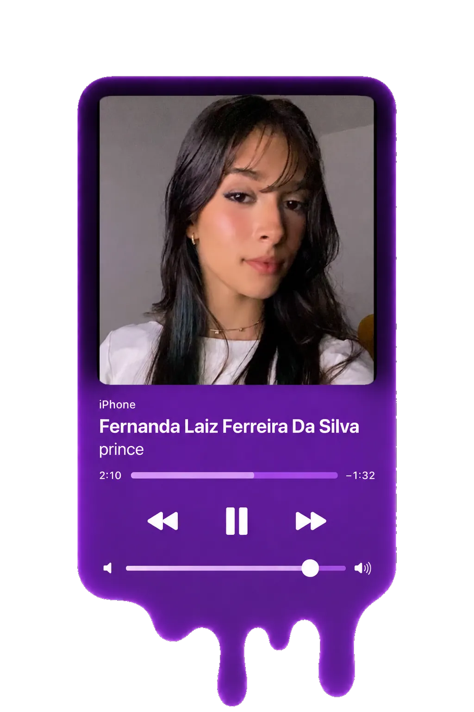

Meu nome é Fernanda Laiz, sou estudante do Ensino Médio e faço parte da área da música nesta revista.
A música sempre esteve presente na minha vida e sempre foi algo importante pra mim.
Desde criança,
ela me marca de um jeito diferente. Recentemente comecei a aprender violão,
e tocar minha primeira música
foi algo especial, porque é algo que eu sempre quis.
Gosto muito de música, jogos, esportes e tudo que envolve sobrevivência,
apocalipse e esse tipo de coisa. Quero muito viajar, conhecer lugares novos, ver paisagens
e explorar o mundo. Adoro pôr do sol, gosto muito de animais, principalmente gatos e cachorros,
e tenho pavor de insetos.
Também gosto de filmes que me fazem ficar pensando por dias,
daqueles que mexem comigo e acabam moldando um
pouco quem eu sou.
A música é uma das coisas que mais fazem parte de mim. Quando escuto
algo que gosto, principalmente Purple Rain
de Prince, eu simplesmente esqueço de tudo por um tempo. E isso é só um
pouquinho sobre mim :)
Escolhi essa música da Adele porque a melodia me chamou atenção desde a primeira vez que ouvi. Gosto de músicas mais calmas e sentimentais, e quis começar tocando algo que realmente combinasse com o que eu gosto de escutar.